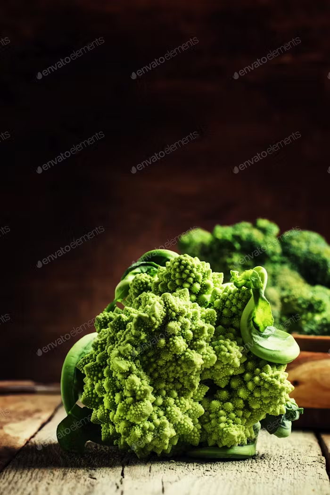

class of food
Nutrition plays a pivotal role in our well-being. Among the essential classes of food, carbohydrates serve as our primary energy source, found in staples like rice, bread, and pasta. Proteins, derived from meat, legumes, and dairy, are vital for muscle repair and growth. Fats, present in nuts and oils, contribute to overall health. Fiber, abundant in fruits and vegetables, aids digestion. Minerals and vitamins, obtained from various foods, support bodily functions. Lastly, water, found in fruits, juices, and beverages, is indispensable for hydration and life itself.
Carbohydrates, or carbs, are sugar molecules. Along with proteins and
fats, carbohydrates are one of three main nutrients found in foods and
drinks. Your body breaks down carbohydrates into glucose. Glucose, or
blood sugar, is the main source of energy for your body's cells,
tissues, and organs.
any of a class of nitrogenous organic compounds that have large molecules composed of one or more long chains of amino acids and are an essential part of all living organisms, especially as structural components of body tissues such as muscle, hair, etc., and as enzymes and antibodies.
a natural oily substance occurring in animal bodies, especially when deposited as a layer under the skin or around certain organs.ny of a group of natural esters of glycerol and various fatty acids, which are solid at room temperature and are the main constituents of animal and vegetable fat.Fats and oils are essential components of a balanced diet, providing energy and supporting various bodily functions.
Fats are composed of fatty acids, with saturated fats being solid at room temperature and found mainly in animal products like butter and red meat. These fats, while necessary in moderation, can contribute to elevated cholesterol levels when consumed excessively. Unsaturated fats, on the other hand, are liquid at room temperature and primarily come from plant sources like olive oil, nuts, and avocados. These fats are beneficial for heart health, helping to lower LDL (bad) cholesterol levels and reduce the risk of cardiovascular diseases.
A nutrient that the body needs in small amounts to function and stay healthy. Sources of vitamins are plant and animal food products and dietary supplements. Some vitamins are made in the human body from food products.any of a group of organic compounds which are essential for normal growth and nutrition and are required in small quantities in the diet because they cannot be synthesized by the body.Proteins are needed for the body to function properly. They are the basis of body structures, such as skin and hair, and of other substances such as enzymes, cytokines, and antibodies.
any of a group of organic compounds which are essential for normal growth and nutrition and are required in small quantities in the diet because they cannot be synthesized by the body.Proteins are needed for the body to function properly. They are the basis of body structures, such as skin and hair, and of other substances such as enzymes, cytokines, and antibodies.A mineral is a natural substance with distinctive chemical and physical properties, composition, and atomic structure. The definition of an economic mineral is broader, and includes minerals, metals, rocks and hydrocarbons (solid and liquid) that are extracted from the earth by mining, quarrying and pumping.
a thread or filament from which a vegetable tissue, mineral substance, or textile is formed ietary material containing substances such as cellulose, lignin, and pectin, that are resistant to the action of digestive enzymes.
carbohydrates

proteins

fats

vitamins
 
minerals
fiber